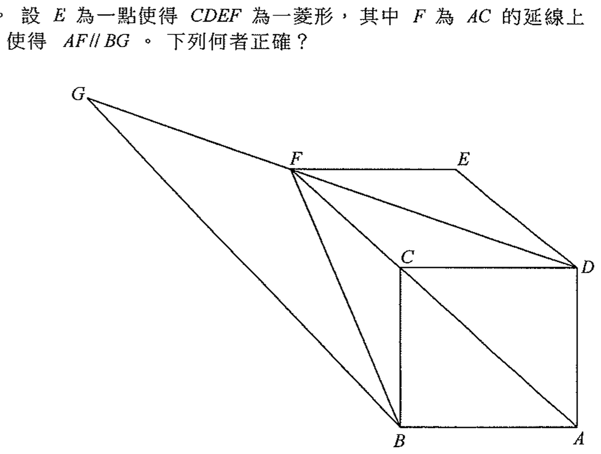
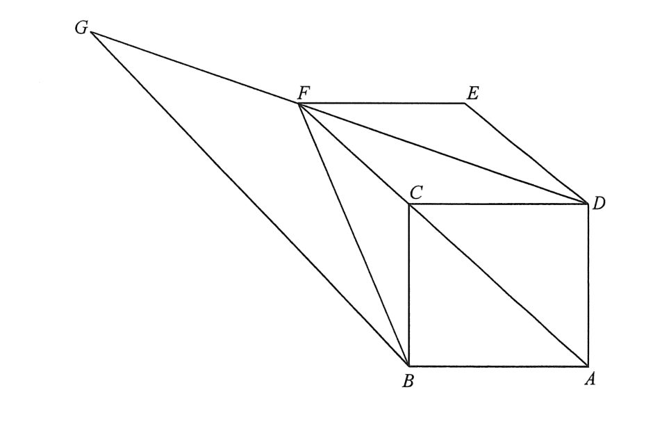

2025 DSE 數學 P2 Q19 答案＋詳解｜答對率 28%
官方答案
D
歷年考生答對率 28%（官方統計）
題目（中文卷）
圖中，$ABCD$ 為一正方形。設 $E$ 為一點使得 $CDEF$ 為一菱形，其中 $F$ 為 $AC$ 的延線上的一點。延長 $DF$ 至點 $G$ 使得 $AF//BG$ 。下列何者正確？ I. $DF=FG$ II. $\triangle BFG \sim \triangle DEF$ III. $\angle ABG + \angle BFD = 180^\circ$

- A. 只有 I 及 II
- B. 只有 I 及 III
- C. 只有 II 及 III
- D. I 、II 及 III
English version（英文卷題目）
In the figure, $ ABCD $ is a square. Let $ E $ be a point such that $ CDEF $ is a rhombus, where $ F $ is a point lying on $ AC $ produced. $ DF $ is produced to the point $ G $ such that $ AF \parallel BG $. Which of the following are true? I. $ DF = FG $ II. $ \triangle BFG \sim \triangle DEF $ III. $ \angle ABG + \angle BFD = 180^\circ $

- A. I and II only
- B. I and III only
- C. II and III only
- D. I, II and III
官方題解 / 評卷參考
答案：D
- 設正方形邊長 $1$，取 $B(0,0)$、$A(1,0)$、$C(0,1)$、$D(1,1)$。$F$ 在 $AC$ 延線上，$CDEF$ 為菱形 $\Rightarrow CF=CD=1$，得 $F\left(-\dfrac{1}{\sqrt2},\,1+\dfrac{1}{\sqrt2}\right)$。
- 由 $AF\parallel BG$ 且 $G$ 在 $DF$ 的延線上，可解得 $G$ 令 $F$ 成為 $DG$ 的中點，故 $DF=FG$，I 正確。
- 菱形給 $DE=EF=1$；計算得 $BF=FG=\sqrt{2+\sqrt2}$，且 $\angle BFG=\angle DEF=135^\circ$，故 $\dfrac{BF}{DE}=\dfrac{FG}{EF}$ 且夾角相等 $\Rightarrow\triangle BFG\sim\triangle DEF$（SAS），II 正確。
- $\angle ABG=135^\circ$（$BA$ 與 $BG$ 的夾角），$\angle BFD=45^\circ$，兩者相加為 $180^\circ$，III 正確。
錯項分析：
- A. 只證到 I 及 II，沒有計算 III（誤以為 $\angle ABG+\angle BFD$ 不是定值）。
- B. 把 II 判錯：以為 $\triangle BFG$ 與 $\triangle DEF$ 只有一組角相等，未有足夠條件證相似。
- C. 把 I 判錯：誤以為 $F$ 是 $DG$ 的三等分點（$FG<DF$）。
考評報告
在第 19 题中，很多考生未有察覺 $\angle ABG = \angle BFG$ 或 $\angle BFG = \angle DEF$，因此錯誤地選 A 或 B 為答案。